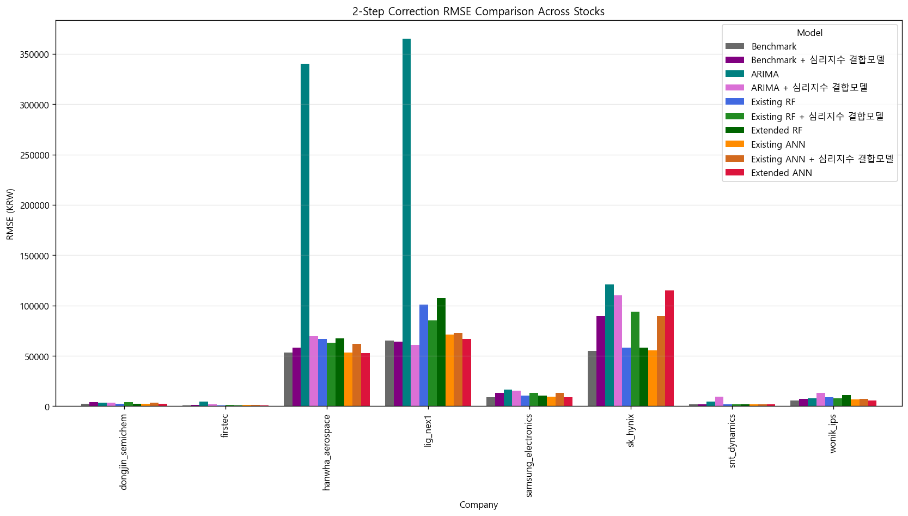
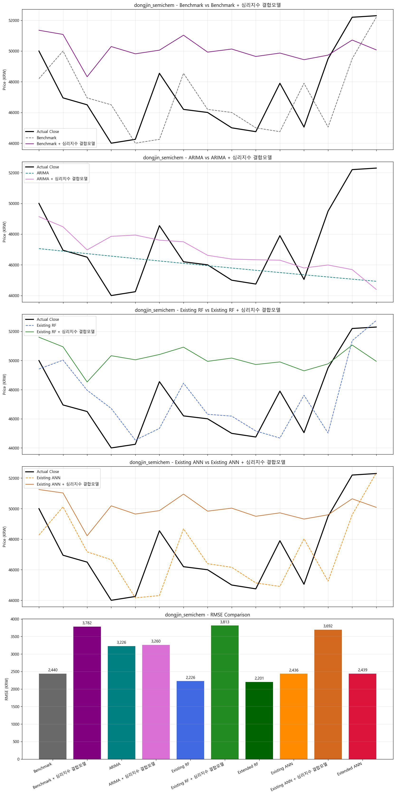
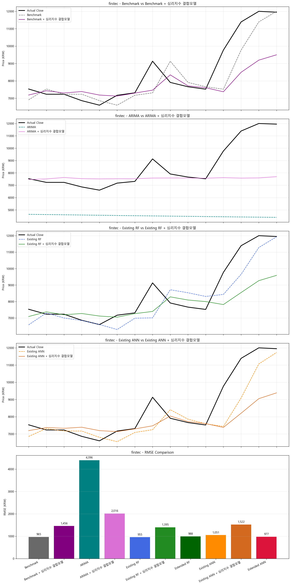
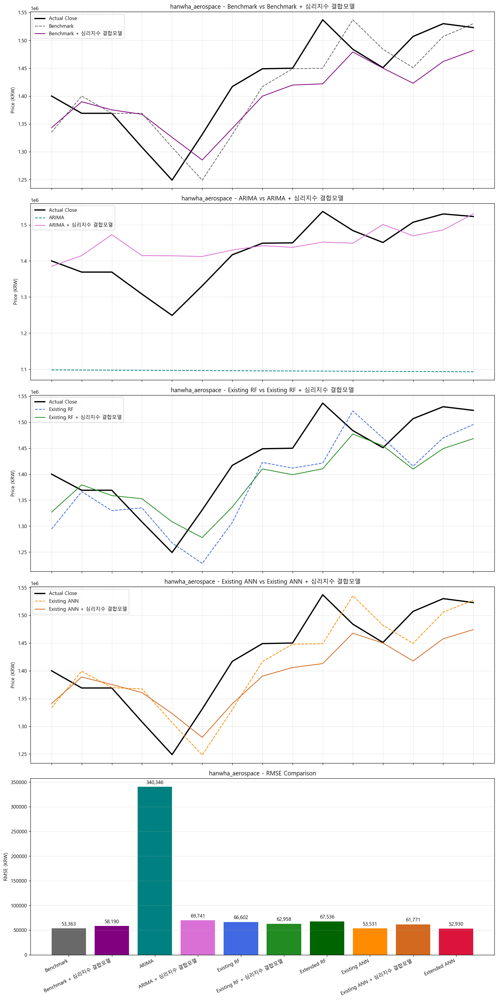
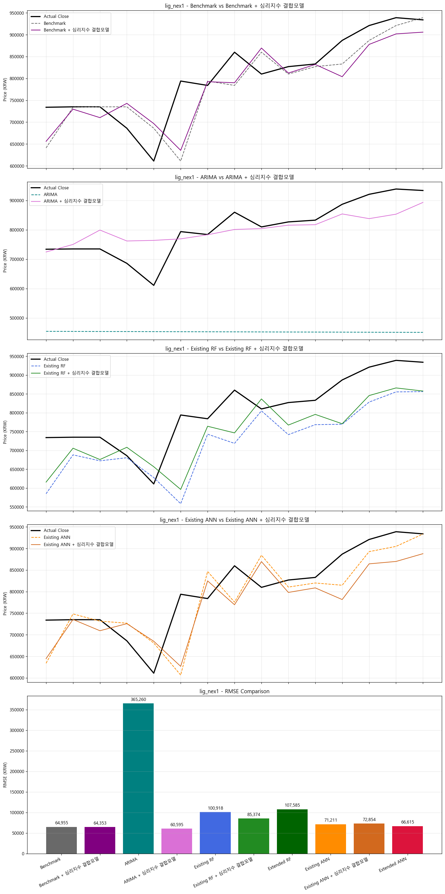
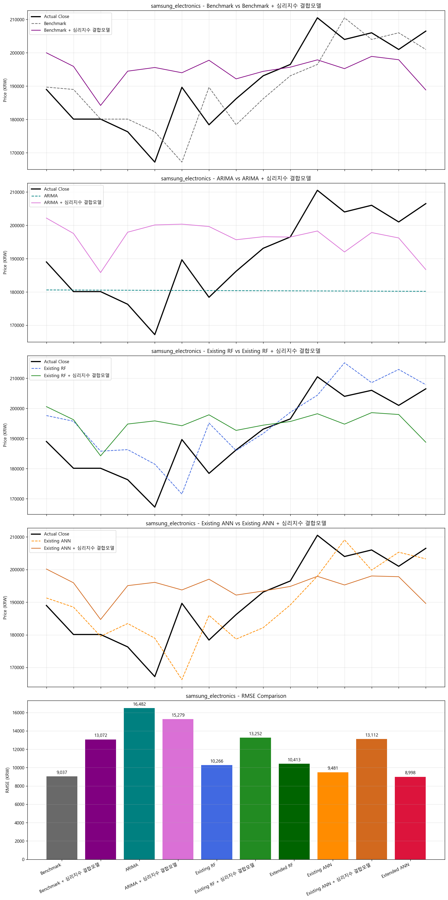
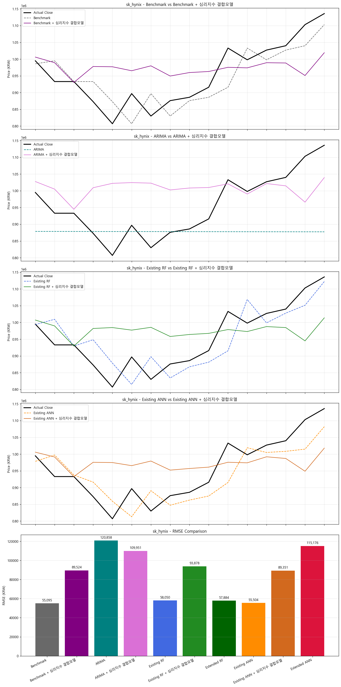
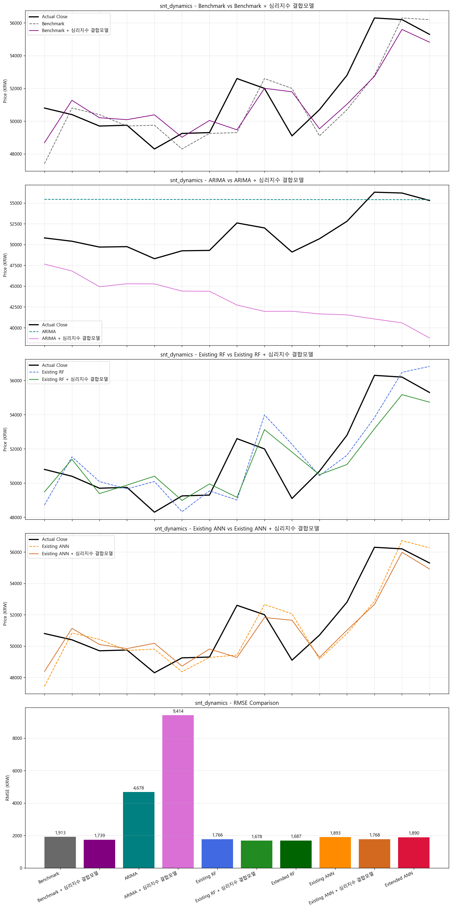
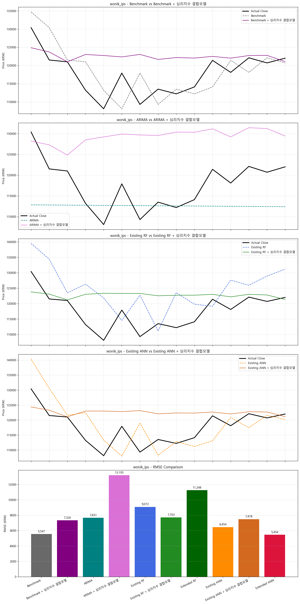

이 보고서는 train_2step_correction.py 실행 결과로 생성된 지표와 그림을 기반으로 작성되었습니다. 각 기업별 기존 가격 모델(Extended)과 심리지수 결합 보정 모델의 성능을 한눈에 확인할 수 있습니다.
기존 Benchmark 예측과 심리지수 결합 보정 모델의 RMSE 개선 여부를 중심으로 성능을 비교합니다.

| Company | Model | RMSE | MAE | MAPE | MBE | R² | Directional Accuracy |
|---|---|---|---|---|---|---|---|
| samsung_electronics | Benchmark | 9037.0534 | 7153.3333 | 3.7670 | -1120.0000 | 0.4802 | 0.5000 |
| samsung_electronics | Benchmark + 심리지수 결합모델 | 13072.2382 | 10567.8596 | 5.6960 | 3900.9555 | -0.0875 | 0.5000 |
| samsung_electronics | ARIMA | 16482.3693 | 13302.6278 | 6.7189 | -10580.3059 | -0.7290 | 0.4286 |
| samsung_electronics | ARIMA + 심리지수 결합모델 | 15278.6030 | 12847.6800 | 6.9217 | 5244.2283 | -0.4856 | 0.5000 |
| samsung_electronics | Existing RF | 10265.9485 | 8399.3589 | 4.5135 | 4946.4840 | 0.3293 | 0.5000 |
| samsung_electronics | Extended RF | 10412.5184 | 8458.2132 | 4.5581 | 5332.0898 | 0.3100 | 0.5000 |
| samsung_electronics | Existing ANN | 11752.2172 | 8914.4864 | 4.7776 | 2255.0301 | 0.1210 | 0.3571 |
| samsung_electronics | Extended ANN | 9274.5873 | 7284.1282 | 3.8354 | -1721.4477 | 0.4526 | 0.5714 |
| sk_hynix | Benchmark | 55095.3719 | 45625.0000 | 4.8678 | -9375.0000 | 0.6473 | 0.4000 |
| sk_hynix | Benchmark + 심리지수 결합모델 | 89523.8522 | 74845.5261 | 8.0476 | 19550.6241 | 0.0689 | 0.5333 |
| sk_hynix | ARIMA | 120858.0969 | 93021.0473 | 9.1533 | -77145.5461 | -0.6970 | 0.5333 |
| sk_hynix | ARIMA + 심리지수 결합모델 | 109950.6901 | 88430.6964 | 9.7681 | 52921.2480 | -0.4045 | 0.4667 |
| sk_hynix | Existing RF | 58049.6623 | 47939.6778 | 5.1523 | -2701.1363 | 0.6085 | 0.4667 |
| sk_hynix | Extended RF | 57883.7298 | 48988.8138 | 5.1962 | -9182.8165 | 0.6107 | 0.6000 |
| sk_hynix | Existing ANN | 56320.7766 | 45025.6471 | 4.7826 | -10290.9963 | 0.6315 | 0.5333 |
| sk_hynix | Extended ANN | 56862.3358 | 45144.9778 | 4.9138 | 13484.1314 | 0.6243 | 0.6000 |
| wonik_ips | Benchmark | 5547.1915 | 4646.6667 | 3.9772 | 846.6667 | 0.0603 | 0.5714 |
| wonik_ips | Benchmark + 심리지수 결합모델 | 7326.2372 | 5672.3314 | 4.9901 | 4809.1903 | -0.6391 | 0.5714 |
| wonik_ips | ARIMA | 7651.3819 | 6193.2026 | 5.1140 | -5078.8403 | -0.7878 | 0.7857 |
| wonik_ips | ARIMA + 심리지수 결합모델 | 13195.4375 | 11939.5020 | 10.3893 | 11646.4210 | -4.3174 | 0.5000 |
| wonik_ips | Existing RF | 9072.1075 | 8030.1391 | 6.9056 | 6965.1843 | -1.5134 | 0.4286 |
| wonik_ips | Extended RF | 11248.2430 | 8784.3434 | 7.6913 | 8357.0892 | -2.8638 | 0.5000 |
| wonik_ips | Existing ANN | 6082.1360 | 5116.2788 | 4.4038 | 2033.5850 | -0.1297 | 0.3571 |
| wonik_ips | Extended ANN | 5594.6498 | 4578.6540 | 3.9456 | 936.4437 | 0.0441 | 0.4286 |
| dongjin_semichem | Benchmark | 2440.2186 | 1960.0000 | 4.1151 | -273.3333 | 0.1392 | 0.5714 |
| dongjin_semichem | Benchmark + 심리지수 결합모델 | 3781.6005 | 3317.5323 | 7.2119 | 2823.2007 | -1.0673 | 0.3571 |
| dongjin_semichem | ARIMA | 3226.3647 | 2239.8428 | 4.5443 | -1312.8346 | -0.5048 | 0.7143 |
| dongjin_semichem | ARIMA + 심리지수 결합모델 | 3259.7533 | 2432.9022 | 5.0302 | -409.8731 | -0.5361 | 0.5000 |
| dongjin_semichem | Existing RF | 2226.1687 | 1802.2533 | 3.8202 | 158.6978 | 0.2836 | 0.4286 |
| dongjin_semichem | Extended RF | 2200.6121 | 1719.6551 | 3.6217 | -327.6009 | 0.2999 | 0.7143 |
| dongjin_semichem | Existing ANN | 2396.3771 | 1972.0827 | 4.1521 | -99.4217 | 0.1699 | 0.4286 |
| dongjin_semichem | Extended ANN | 2434.4406 | 1948.7094 | 4.0875 | -324.4466 | 0.1433 | 0.5714 |
| hanwha_aerospace | Benchmark | 53362.9085 | 45066.6667 | 3.1991 | -12533.3333 | 0.5960 | 0.5000 |
| hanwha_aerospace | Benchmark + 심리지수 결합모델 | 58189.7778 | 48930.5944 | 3.4342 | -27188.8514 | 0.5196 | 0.5000 |
| hanwha_aerospace | ARIMA | 340346.1609 | 329511.1663 | 22.8435 | -329511.1663 | -15.4357 | 0.5000 |
| hanwha_aerospace | ARIMA + 심리지수 결합모델 | 69740.9857 | 53910.1914 | 3.9264 | 22440.5012 | 0.3099 | 0.4286 |
| hanwha_aerospace | Existing RF | 66601.8394 | 54779.2397 | 3.8176 | -41168.4792 | 0.3706 | 0.5714 |
| hanwha_aerospace | Extended RF | 67536.2416 | 55337.9309 | 3.8647 | -43906.2174 | 0.3528 | 0.5000 |
| hanwha_aerospace | Existing ANN | 52823.4624 | 45217.9633 | 3.2123 | -9622.3804 | 0.6041 | 0.5000 |
| hanwha_aerospace | Extended ANN | 53481.4227 | 44966.5499 | 3.1900 | -13805.4903 | 0.5942 | 0.6429 |
| lig_nex1 | Benchmark | 64954.8561 | 44733.3333 | 5.7710 | -19533.3333 | 0.4988 | 0.4286 |
| lig_nex1 | Benchmark + 심리지수 결합모델 | 64353.4084 | 50297.9778 | 6.4334 | -22207.3984 | 0.5081 | 0.5000 |
| lig_nex1 | ARIMA | 365260.0518 | 353306.2983 | 43.0420 | -353306.2983 | -14.8475 | 0.4286 |
| lig_nex1 | ARIMA + 심리지수 결합모델 | 60595.0833 | 45104.4610 | 5.8909 | -3930.6871 | 0.5639 | 0.5714 |
| lig_nex1 | Existing RF | 100917.6615 | 81705.9399 | 9.9573 | -79452.7541 | -0.2097 | 0.4286 |
| lig_nex1 | Extended RF | 107585.1529 | 91036.5640 | 11.0838 | -89420.7569 | -0.3749 | 0.4286 |
| lig_nex1 | Existing ANN | 67259.9494 | 49482.7625 | 6.4365 | -5137.6413 | 0.4626 | 0.5000 |
| lig_nex1 | Extended ANN | 64589.1228 | 44289.6971 | 5.7162 | -22335.8979 | 0.5045 | 0.5000 |
| snt_dynamics | Benchmark | 1913.4611 | 1466.6667 | 2.8345 | -526.6667 | 0.4354 | 0.5000 |
| snt_dynamics | Benchmark + 심리지수 결합모델 | 1739.2972 | 1353.3574 | 2.6168 | -387.4736 | 0.5335 | 0.7857 |
| snt_dynamics | ARIMA | 4677.6982 | 4144.0125 | 8.2648 | 3917.9585 | -2.3744 | 0.6429 |
| snt_dynamics | ARIMA + 심리지수 결합모델 | 9413.8707 | 8232.0076 | 15.6299 | -8232.0076 | -12.6669 | 0.5000 |
| snt_dynamics | Existing RF | 1765.6481 | 1407.7702 | 2.7258 | -4.7597 | 0.5192 | 0.4286 |
| snt_dynamics | Extended RF | 1686.7636 | 1333.2234 | 2.5788 | -222.2661 | 0.5612 | 0.5000 |
| snt_dynamics | Existing ANN | 1892.8137 | 1444.8137 | 2.7897 | -463.0354 | 0.4475 | 0.7143 |
| snt_dynamics | Extended ANN | 1930.7455 | 1470.8762 | 2.8431 | -524.1818 | 0.4251 | 0.5000 |
| firstec | Benchmark | 964.9801 | 681.3333 | 7.6546 | -336.0000 | 0.7216 | 0.5714 |
| firstec | Benchmark + 심리지수 결합모델 | 1456.1001 | 971.7138 | 9.6719 | -712.1493 | 0.3662 | 0.5714 |
| firstec | ARIMA | 4396.2286 | 3969.2446 | 44.4941 | -3969.2446 | -4.7777 | 0.5714 |
| firstec | ARIMA + 심리지수 결합모델 | 2016.2306 | 1302.0069 | 12.8224 | -919.1568 | -0.2153 | 0.6429 |
| firstec | Existing RF | 955.2607 | 724.3775 | 8.2678 | -385.6062 | 0.7272 | 0.5000 |
| firstec | Extended RF | 988.1305 | 759.2035 | 8.5313 | -445.7047 | 0.7081 | 0.5000 |
| firstec | Existing ANN | 980.1363 | 686.5174 | 7.6359 | -391.3431 | 0.7128 | 0.5714 |
| firstec | Extended ANN | 1030.3525 | 736.1317 | 8.0623 | -493.4206 | 0.6826 | 0.5714 |
아래 내용은 2-step 심리 보정 모델 결과를 바탕으로 한 기업별 해석과 결론입니다.
기존 가격 모델과 심리지수 결합 보정 모델의 가격 예측 성능을 비교한 기업별 상세 결과입니다.

| Model | RMSE | MAE | MAPE | MBE | R² | Directional Accuracy |
|---|---|---|---|---|---|---|
| Benchmark | 2440.2186 | 1960.0000 | 4.1151 | -273.3333 | 0.1392 | 0.5714 |
| Benchmark + 심리지수 결합모델 | 3781.6005 | 3317.5323 | 7.2119 | 2823.2007 | -1.0673 | 0.3571 |
| ARIMA | 3226.3647 | 2239.8428 | 4.5443 | -1312.8346 | -0.5048 | 0.7143 |
| ARIMA + 심리지수 결합모델 | 3259.7533 | 2432.9022 | 5.0302 | -409.8731 | -0.5361 | 0.5000 |
| Existing RF | 2226.1687 | 1802.2533 | 3.8202 | 158.6978 | 0.2836 | 0.4286 |
| Extended RF | 2200.6121 | 1719.6551 | 3.6217 | -327.6009 | 0.2999 | 0.7143 |
| Existing ANN | 2396.3771 | 1972.0827 | 4.1521 | -99.4217 | 0.1699 | 0.4286 |
| Extended ANN | 2434.4406 | 1948.7094 | 4.0875 | -324.4466 | 0.1433 | 0.5714 |
기존 가격 모델과 심리지수 결합 보정 모델의 가격 예측 성능을 비교한 기업별 상세 결과입니다.

| Model | RMSE | MAE | MAPE | MBE | R² | Directional Accuracy |
|---|---|---|---|---|---|---|
| Benchmark | 964.9801 | 681.3333 | 7.6546 | -336.0000 | 0.7216 | 0.5714 |
| Benchmark + 심리지수 결합모델 | 1456.1001 | 971.7138 | 9.6719 | -712.1493 | 0.3662 | 0.5714 |
| ARIMA | 4396.2286 | 3969.2446 | 44.4941 | -3969.2446 | -4.7777 | 0.5714 |
| ARIMA + 심리지수 결합모델 | 2016.2306 | 1302.0069 | 12.8224 | -919.1568 | -0.2153 | 0.6429 |
| Existing RF | 955.2607 | 724.3775 | 8.2678 | -385.6062 | 0.7272 | 0.5000 |
| Extended RF | 988.1305 | 759.2035 | 8.5313 | -445.7047 | 0.7081 | 0.5000 |
| Existing ANN | 980.1363 | 686.5174 | 7.6359 | -391.3431 | 0.7128 | 0.5714 |
| Extended ANN | 1030.3525 | 736.1317 | 8.0623 | -493.4206 | 0.6826 | 0.5714 |
기존 가격 모델과 심리지수 결합 보정 모델의 가격 예측 성능을 비교한 기업별 상세 결과입니다.

| Model | RMSE | MAE | MAPE | MBE | R² | Directional Accuracy |
|---|---|---|---|---|---|---|
| Benchmark | 53362.9085 | 45066.6667 | 3.1991 | -12533.3333 | 0.5960 | 0.5000 |
| Benchmark + 심리지수 결합모델 | 58189.7778 | 48930.5944 | 3.4342 | -27188.8514 | 0.5196 | 0.5000 |
| ARIMA | 340346.1609 | 329511.1663 | 22.8435 | -329511.1663 | -15.4357 | 0.5000 |
| ARIMA + 심리지수 결합모델 | 69740.9857 | 53910.1914 | 3.9264 | 22440.5012 | 0.3099 | 0.4286 |
| Existing RF | 66601.8394 | 54779.2397 | 3.8176 | -41168.4792 | 0.3706 | 0.5714 |
| Extended RF | 67536.2416 | 55337.9309 | 3.8647 | -43906.2174 | 0.3528 | 0.5000 |
| Existing ANN | 52823.4624 | 45217.9633 | 3.2123 | -9622.3804 | 0.6041 | 0.5000 |
| Extended ANN | 53481.4227 | 44966.5499 | 3.1900 | -13805.4903 | 0.5942 | 0.6429 |
기존 가격 모델과 심리지수 결합 보정 모델의 가격 예측 성능을 비교한 기업별 상세 결과입니다.

| Model | RMSE | MAE | MAPE | MBE | R² | Directional Accuracy |
|---|---|---|---|---|---|---|
| Benchmark | 64954.8561 | 44733.3333 | 5.7710 | -19533.3333 | 0.4988 | 0.4286 |
| Benchmark + 심리지수 결합모델 | 64353.4084 | 50297.9778 | 6.4334 | -22207.3984 | 0.5081 | 0.5000 |
| ARIMA | 365260.0518 | 353306.2983 | 43.0420 | -353306.2983 | -14.8475 | 0.4286 |
| ARIMA + 심리지수 결합모델 | 60595.0833 | 45104.4610 | 5.8909 | -3930.6871 | 0.5639 | 0.5714 |
| Existing RF | 100917.6615 | 81705.9399 | 9.9573 | -79452.7541 | -0.2097 | 0.4286 |
| Extended RF | 107585.1529 | 91036.5640 | 11.0838 | -89420.7569 | -0.3749 | 0.4286 |
| Existing ANN | 67259.9494 | 49482.7625 | 6.4365 | -5137.6413 | 0.4626 | 0.5000 |
| Extended ANN | 64589.1228 | 44289.6971 | 5.7162 | -22335.8979 | 0.5045 | 0.5000 |
기존 가격 모델과 심리지수 결합 보정 모델의 가격 예측 성능을 비교한 기업별 상세 결과입니다.

| Model | RMSE | MAE | MAPE | MBE | R² | Directional Accuracy |
|---|---|---|---|---|---|---|
| Benchmark | 9037.0534 | 7153.3333 | 3.7670 | -1120.0000 | 0.4802 | 0.5000 |
| Benchmark + 심리지수 결합모델 | 13072.2382 | 10567.8596 | 5.6960 | 3900.9555 | -0.0875 | 0.5000 |
| ARIMA | 16482.3693 | 13302.6278 | 6.7189 | -10580.3059 | -0.7290 | 0.4286 |
| ARIMA + 심리지수 결합모델 | 15278.6030 | 12847.6800 | 6.9217 | 5244.2283 | -0.4856 | 0.5000 |
| Existing RF | 10265.9485 | 8399.3589 | 4.5135 | 4946.4840 | 0.3293 | 0.5000 |
| Extended RF | 10412.5184 | 8458.2132 | 4.5581 | 5332.0898 | 0.3100 | 0.5000 |
| Existing ANN | 11752.2172 | 8914.4864 | 4.7776 | 2255.0301 | 0.1210 | 0.3571 |
| Extended ANN | 9274.5873 | 7284.1282 | 3.8354 | -1721.4477 | 0.4526 | 0.5714 |
기존 가격 모델과 심리지수 결합 보정 모델의 가격 예측 성능을 비교한 기업별 상세 결과입니다.

| Model | RMSE | MAE | MAPE | MBE | R² | Directional Accuracy |
|---|---|---|---|---|---|---|
| Benchmark | 55095.3719 | 45625.0000 | 4.8678 | -9375.0000 | 0.6473 | 0.4000 |
| Benchmark + 심리지수 결합모델 | 89523.8522 | 74845.5261 | 8.0476 | 19550.6241 | 0.0689 | 0.5333 |
| ARIMA | 120858.0969 | 93021.0473 | 9.1533 | -77145.5461 | -0.6970 | 0.5333 |
| ARIMA + 심리지수 결합모델 | 109950.6901 | 88430.6964 | 9.7681 | 52921.2480 | -0.4045 | 0.4667 |
| Existing RF | 58049.6623 | 47939.6778 | 5.1523 | -2701.1363 | 0.6085 | 0.4667 |
| Extended RF | 57883.7298 | 48988.8138 | 5.1962 | -9182.8165 | 0.6107 | 0.6000 |
| Existing ANN | 56320.7766 | 45025.6471 | 4.7826 | -10290.9963 | 0.6315 | 0.5333 |
| Extended ANN | 56862.3358 | 45144.9778 | 4.9138 | 13484.1314 | 0.6243 | 0.6000 |
기존 가격 모델과 심리지수 결합 보정 모델의 가격 예측 성능을 비교한 기업별 상세 결과입니다.

| Model | RMSE | MAE | MAPE | MBE | R² | Directional Accuracy |
|---|---|---|---|---|---|---|
| Benchmark | 1913.4611 | 1466.6667 | 2.8345 | -526.6667 | 0.4354 | 0.5000 |
| Benchmark + 심리지수 결합모델 | 1739.2972 | 1353.3574 | 2.6168 | -387.4736 | 0.5335 | 0.7857 |
| ARIMA | 4677.6982 | 4144.0125 | 8.2648 | 3917.9585 | -2.3744 | 0.6429 |
| ARIMA + 심리지수 결합모델 | 9413.8707 | 8232.0076 | 15.6299 | -8232.0076 | -12.6669 | 0.5000 |
| Existing RF | 1765.6481 | 1407.7702 | 2.7258 | -4.7597 | 0.5192 | 0.4286 |
| Extended RF | 1686.7636 | 1333.2234 | 2.5788 | -222.2661 | 0.5612 | 0.5000 |
| Existing ANN | 1892.8137 | 1444.8137 | 2.7897 | -463.0354 | 0.4475 | 0.7143 |
| Extended ANN | 1930.7455 | 1470.8762 | 2.8431 | -524.1818 | 0.4251 | 0.5000 |
기존 가격 모델과 심리지수 결합 보정 모델의 가격 예측 성능을 비교한 기업별 상세 결과입니다.

| Model | RMSE | MAE | MAPE | MBE | R² | Directional Accuracy |
|---|---|---|---|---|---|---|
| Benchmark | 5547.1915 | 4646.6667 | 3.9772 | 846.6667 | 0.0603 | 0.5714 |
| Benchmark + 심리지수 결합모델 | 7326.2372 | 5672.3314 | 4.9901 | 4809.1903 | -0.6391 | 0.5714 |
| ARIMA | 7651.3819 | 6193.2026 | 5.1140 | -5078.8403 | -0.7878 | 0.7857 |
| ARIMA + 심리지수 결합모델 | 13195.4375 | 11939.5020 | 10.3893 | 11646.4210 | -4.3174 | 0.5000 |
| Existing RF | 9072.1075 | 8030.1391 | 6.9056 | 6965.1843 | -1.5134 | 0.4286 |
| Extended RF | 11248.2430 | 8784.3434 | 7.6913 | 8357.0892 | -2.8638 | 0.5000 |
| Existing ANN | 6082.1360 | 5116.2788 | 4.4038 | 2033.5850 | -0.1297 | 0.3571 |
| Extended ANN | 5594.6498 | 4578.6540 | 3.9456 | 936.4437 | 0.0441 | 0.4286 |